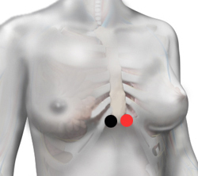

Mucor
Pares
hiato -hiato
riñón - cuerpo de páncreas
vejiga - vejiga
duodeno - vejiga

Generalidades:
Mucor: género de hongos perteneciente a la familia Mucoraceae que forma delicados filamentos tubulares.
Afecta principalmente a personas inmunodeprimidas presentando infección en senos paranasales, cerebro y pulmones.
También puede presentarse en caso de quemaduras, leucemia, uso prolongado de esteroides, acidosis metabólica, desnutrición o incluso por el uso de algunos medicamentos.
Transmisión:
Mas común por alimentos en descomposición.